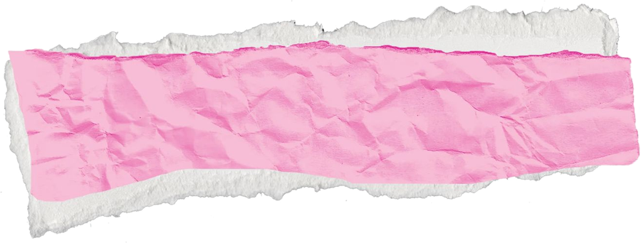
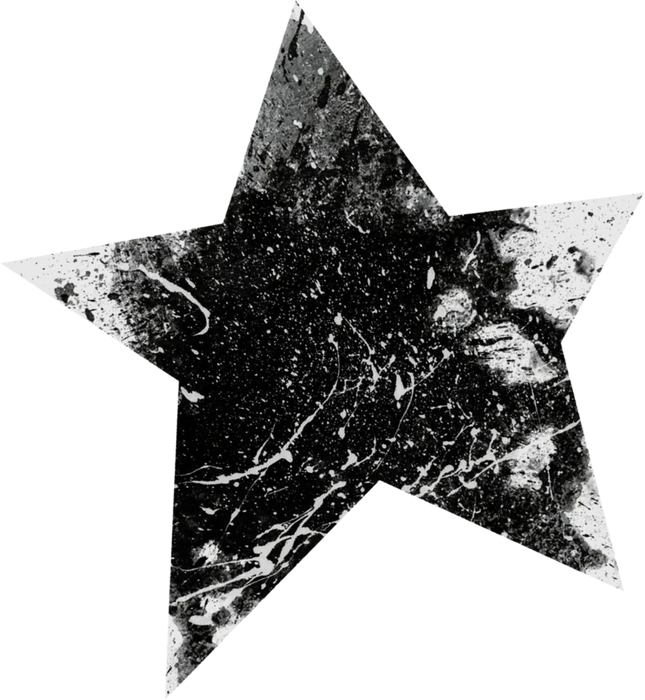

StrayArk
DCIT 26 · Application Development and Emerging TechnologiesA network of flood refuge pods for stray dogs and cats. I planned the pod size, materials, placement, and food and water supply.







Just like my site, I’m still growing. Every semester I come back to add what I’ve learned, including new projects, certificates, and skills, and make sure everything still works on any device.
Projects
A network of flood refuge pods for stray dogs and cats. I planned the pod size, materials, placement, and food and water supply.
A redesign of an existing logo, built in layers so each part stays editable, with a written explanation of my choices.
My learning journey in Web Systems and Technologies 1, built with HTML, CSS, JavaScript, and databases.